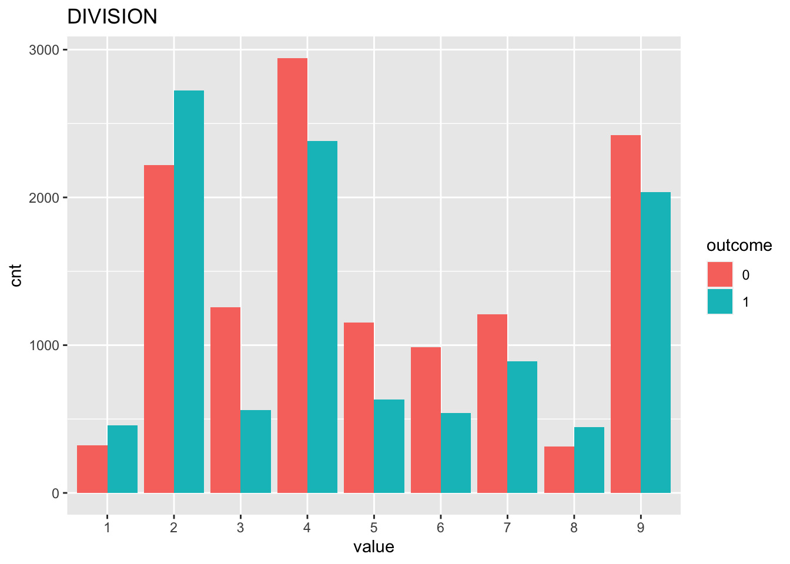
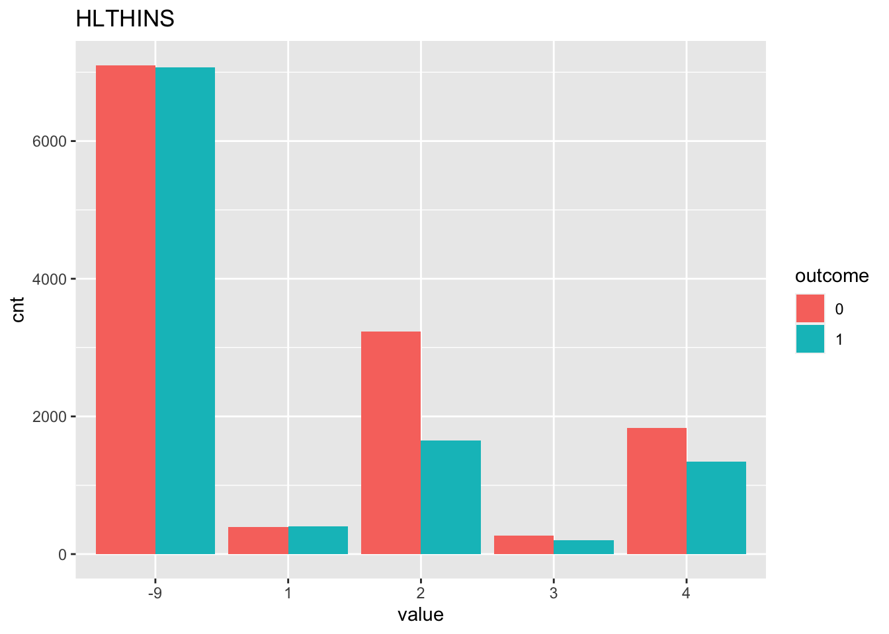
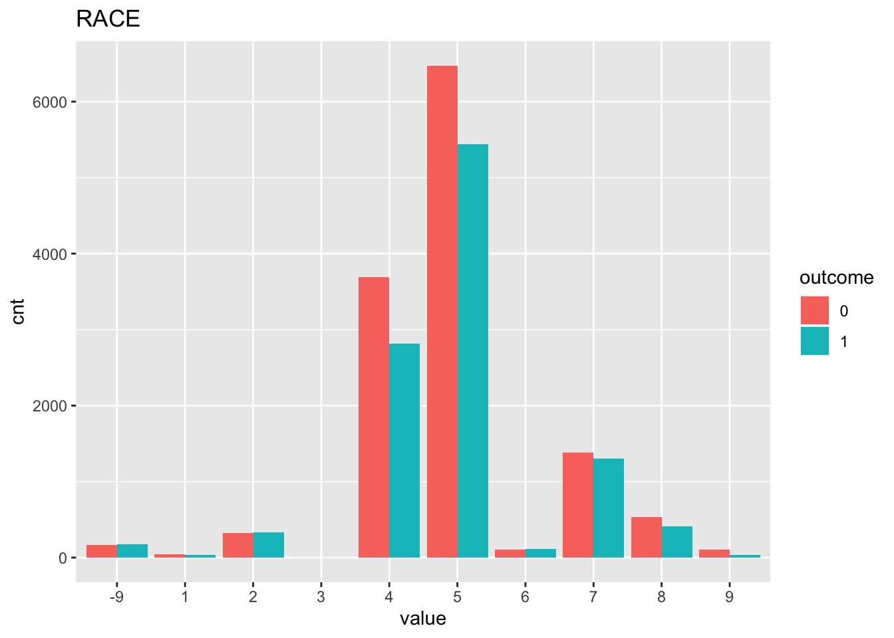
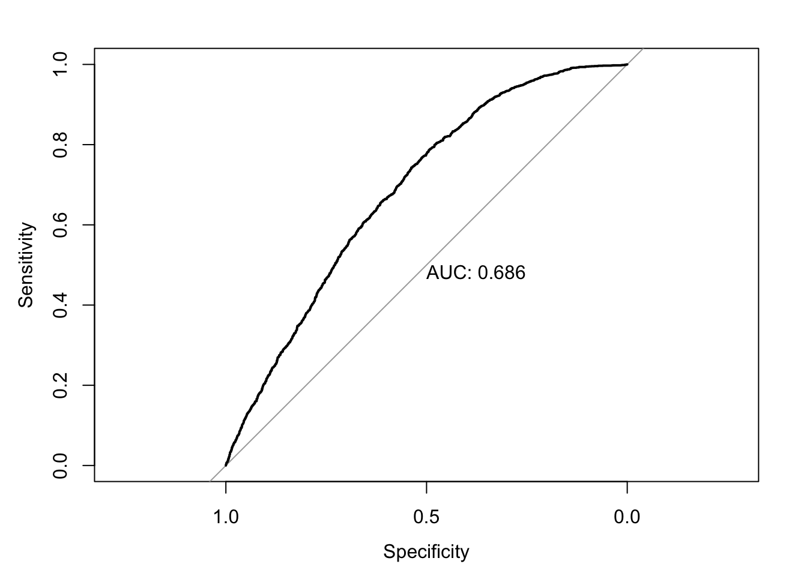
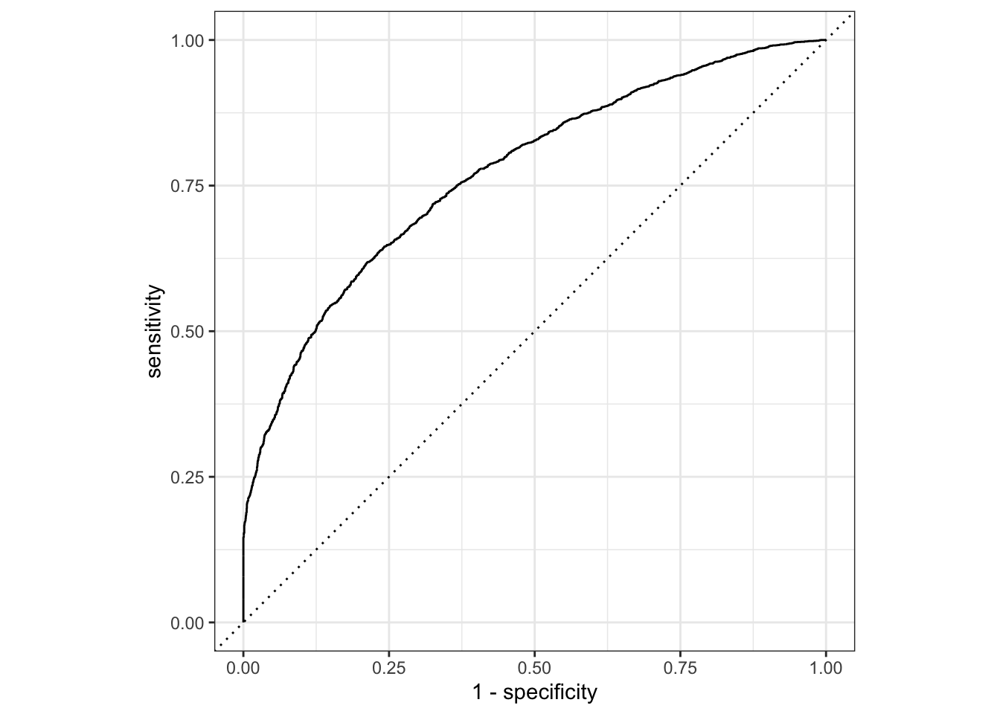
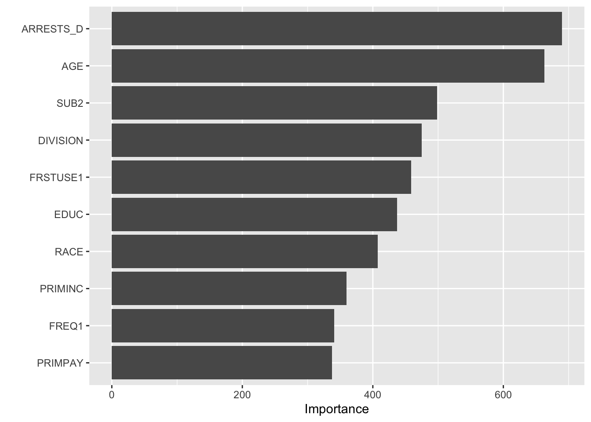

Last updated: 2020-12-18
Checks: 6 1
Knit directory: teds_ml/
This reproducible R Markdown analysis was created with workflowr (version 1.6.2). The Checks tab describes the reproducibility checks that were applied when the results were created. The Past versions tab lists the development history.
The R Markdown is untracked by Git. To know which version of the R Markdown file created these results, you’ll want to first commit it to the Git repo. If you’re still working on the analysis, you can ignore this warning. When you’re finished, you can run wflow_publish to commit the R Markdown file and build the HTML.
Great job! The global environment was empty. Objects defined in the global environment can affect the analysis in your R Markdown file in unknown ways. For reproduciblity it’s best to always run the code in an empty environment.
The command set.seed(20201124) was run prior to running the code in the R Markdown file. Setting a seed ensures that any results that rely on randomness, e.g. subsampling or permutations, are reproducible.
Great job! Recording the operating system, R version, and package versions is critical for reproducibility.
Nice! There were no cached chunks for this analysis, so you can be confident that you successfully produced the results during this run.
Great job! Using relative paths to the files within your workflowr project makes it easier to run your code on other machines.
Great! You are using Git for version control. Tracking code development and connecting the code version to the results is critical for reproducibility.
The results in this page were generated with repository version be9f492. See the Past versions tab to see a history of the changes made to the R Markdown and HTML files.
Note that you need to be careful to ensure that all relevant files for the analysis have been committed to Git prior to generating the results (you can use wflow_publish or wflow_git_commit). workflowr only checks the R Markdown file, but you know if there are other scripts or data files that it depends on. Below is the status of the Git repository when the results were generated:
Ignored files:
Ignored: .DS_Store
Ignored: .Rhistory
Ignored: analysis/.DS_Store
Untracked files:
Untracked: analysis/alc_completion_2017.Rmd
Untracked: analysis/cocaine_completion_2017.Rmd
Untracked: analysis/meth_completion_2017.Rmd
Untracked: analysis/mj_completion_2017.Rmd
Untracked: analysis/opioid_completion_2017_medicaid.Rmd
Untracked: analysis/tx_completion_2017.Rmd
Untracked: analysis/tx_completion_2017_lg.Rmd
Untracked: data/.ipynb_checkpoints/
Untracked: data/TEDS-D-2007-DS0001-data-excel.tsv
Untracked: data/clean_data.ipynb
Untracked: data/expansion-status-interactive-map_10.1.20-2.csv
Untracked: data/medicaid_expansion.csv
Untracked: data/teds4aequitas.csv
Untracked: data/tedsa_puf_2017.csv
Untracked: data/tedsd_puf_2017.csv
Untracked: output/teds_predictions.csv
Untracked: tx_completion_2017.Rmd
Unstaged changes:
Deleted: analysis/feature_exploration.Rmd
Modified: analysis/index.Rmd
Modified: analysis/opioid_completion_2017.Rmd
Note that any generated files, e.g. HTML, png, CSS, etc., are not included in this status report because it is ok for generated content to have uncommitted changes.
There are no past versions. Publish this analysis with wflow_publish() to start tracking its development.
Refer to the codebook for variable descriptions.
Response: Successful completion of short or long-term marijuana treatment Features: See myvars defined below.
mydata <- read.csv("data/tedsd_puf_2017.csv")
medexp <- read.csv("data/medicaid_expansion.csv")
# merge
mydata <- merge(mydata, medexp, by='STFIPS')
# filter
mydata <- mydata %>% filter(SUB1 == 4, SERVICES %in% c(4,5)) # marijuana
mydata$COMPLETED = ifelse(mydata$REASON==1, 1, 0) #create response variable
myvars <- c("ROUTE1", "ALCFLG", "FREQ1", "FRSTUSE1", "IDU","COKEFLG", "BENZFLG", "PSYPROB", "HLTHINS", "PRIMPAY", "AGE", "GENDER", "LIVARAG", "DIVISION", "METHUSE", "NOPRIOR", "EDUC", "HERFLG","RACE","MARSTAT","PRIMINC","ETHNIC","ARRESTS_D", "SUB2", "MEDEXP")
response = "COMPLETED"
teds <- as.data.frame(lapply(mydata[myvars], factor))
teds[, response] = mydata[, response]First, we check to see if our classes are balanced.
table(teds[,response])
0 1
12826 10664 In this case it looks ok! Next, we can vizualize some (or all) of the relationships between the features and the response. Here we just look at 3 of the variables so it’s less chaotic.
sbs_response_plots(teds, c("DIVISION", "HLTHINS", "RACE"), response)
Next, split the data into training and testing sets, using 3/4 of the data for training and holding out 1/4 for testing.
set.seed(123) #for replicability
teds_split = initial_split(teds, prop=3/4)
# extract training and testing sets
teds_train <- training(teds_split)
teds_test <- testing(teds_split)Now, we fit a logistic regression model on our training data. We display the coefficients as well as the predictive performance on the test data.
fm <- as.formula(paste(response, "~ ."))
lg = glm(fm, family=binomial, data=teds_train)
summary(lg)
Call:
glm(formula = fm, family = binomial, data = teds_train)
Deviance Residuals:
Min 1Q Median 3Q Max
-2.1294 -1.0699 -0.3756 1.0592 3.1343
Coefficients:
Estimate Std. Error z value Pr(>|z|)
(Intercept) -0.572619 1.359316 -0.421 0.673569
ROUTE11 -0.068944 0.313607 -0.220 0.825994
ROUTE12 0.156437 0.288282 0.543 0.587368
ROUTE13 0.722584 0.360026 2.007 0.044746 *
ROUTE14 0.008511 0.509043 0.017 0.986660
ROUTE15 0.620442 0.410257 1.512 0.130451
ALCFLG1 -0.004763 0.081228 -0.059 0.953237
FREQ11 -0.074649 0.074931 -0.996 0.319131
FREQ12 -0.120779 0.072242 -1.672 0.094548 .
FREQ13 -0.202897 0.068440 -2.965 0.003031 **
FRSTUSE11 -0.211857 0.239274 -0.885 0.375932
FRSTUSE12 -0.126715 0.236936 -0.535 0.592784
FRSTUSE13 -0.036665 0.238087 -0.154 0.877610
FRSTUSE14 0.045413 0.244106 0.186 0.852415
FRSTUSE15 -0.144301 0.266260 -0.542 0.587849
FRSTUSE16 0.043032 0.296040 0.145 0.884428
FRSTUSE17 -0.294303 0.300120 -0.981 0.326782
IDU0 -0.081562 0.060419 -1.350 0.177038
IDU1 -0.164432 0.087671 -1.876 0.060714 .
COKEFLG1 0.092507 0.096088 0.963 0.335681
BENZFLG1 0.089916 0.107564 0.836 0.403194
PSYPROB1 -0.586318 0.069625 -8.421 < 2e-16 ***
PSYPROB2 -0.482107 0.068884 -6.999 2.58e-12 ***
HLTHINS1 0.697177 0.139851 4.985 6.19e-07 ***
HLTHINS2 0.189018 0.088778 2.129 0.033245 *
HLTHINS3 0.221297 0.143085 1.547 0.121958
HLTHINS4 0.160750 0.088576 1.815 0.069549 .
PRIMPAY1 -0.527823 0.165815 -3.183 0.001457 **
PRIMPAY2 -0.731194 0.152757 -4.787 1.70e-06 ***
PRIMPAY3 -0.565976 0.591790 -0.956 0.338880
PRIMPAY4 -0.940024 0.087680 -10.721 < 2e-16 ***
PRIMPAY5 -0.457249 0.087404 -5.231 1.68e-07 ***
PRIMPAY6 -0.173115 0.172920 -1.001 0.316764
PRIMPAY7 -0.553109 0.124388 -4.447 8.72e-06 ***
AGE2 0.096979 0.099857 0.971 0.331460
AGE3 -0.064731 0.113809 -0.569 0.569513
AGE4 -0.172099 0.113194 -1.520 0.128413
AGE5 -0.096032 0.113287 -0.848 0.396613
AGE6 -0.052698 0.116505 -0.452 0.651037
AGE7 -0.095210 0.121309 -0.785 0.432540
AGE8 0.111940 0.133758 0.837 0.402655
AGE9 0.301283 0.139275 2.163 0.030524 *
AGE10 -0.002458 0.152104 -0.016 0.987105
AGE11 0.322051 0.162986 1.976 0.048161 *
AGE12 -0.329209 0.445759 -0.739 0.460189
GENDER1 1.082038 1.296009 0.835 0.403774
GENDER2 1.026119 1.296167 0.792 0.428561
LIVARAG1 -0.109887 0.147101 -0.747 0.455050
LIVARAG2 0.165051 0.142084 1.162 0.245383
LIVARAG3 0.086447 0.143896 0.601 0.547997
DIVISION2 -0.130010 0.113429 -1.146 0.251718
DIVISION3 -1.040066 0.119850 -8.678 < 2e-16 ***
DIVISION4 -0.627045 0.115683 -5.420 5.95e-08 ***
DIVISION5 -0.356373 0.120037 -2.969 0.002989 **
DIVISION6 -0.792770 0.131881 -6.011 1.84e-09 ***
DIVISION7 -0.668039 0.127710 -5.231 1.69e-07 ***
DIVISION8 -0.007252 0.140958 -0.051 0.958968
DIVISION9 -0.425995 0.137028 -3.109 0.001878 **
METHUSE1 -0.072784 0.181759 -0.400 0.688830
METHUSE2 -0.277237 0.117407 -2.361 0.018209 *
NOPRIOR0 -0.604344 0.134823 -4.482 7.38e-06 ***
NOPRIOR1 -0.609739 0.134446 -4.535 5.76e-06 ***
EDUC1 -1.221964 0.142199 -8.593 < 2e-16 ***
EDUC2 -0.848366 0.132662 -6.395 1.61e-10 ***
EDUC3 -0.726843 0.134656 -5.398 6.75e-08 ***
EDUC4 -0.642297 0.141064 -4.553 5.28e-06 ***
EDUC5 -0.690063 0.195253 -3.534 0.000409 ***
HERFLG1 0.025121 0.141933 0.177 0.859512
RACE1 0.011385 0.323918 0.035 0.971961
RACE2 -0.165396 0.183557 -0.901 0.367558
RACE3 9.815573 119.468327 0.082 0.934519
RACE4 -0.313244 0.161109 -1.944 0.051860 .
RACE5 -0.116880 0.157436 -0.742 0.457850
RACE6 -0.013738 0.230422 -0.060 0.952458
RACE7 -0.223970 0.163637 -1.369 0.171094
RACE8 -0.211916 0.175061 -1.211 0.226078
RACE9 -1.155018 0.282048 -4.095 4.22e-05 ***
MARSTAT1 -0.391655 0.103275 -3.792 0.000149 ***
MARSTAT2 -0.397249 0.126006 -3.153 0.001618 **
MARSTAT3 -0.299864 0.147160 -2.038 0.041583 *
MARSTAT4 -0.401789 0.129844 -3.094 0.001972 **
PRIMINC1 0.601436 0.090160 6.671 2.55e-11 ***
PRIMINC2 0.218409 0.107988 2.023 0.043122 *
PRIMINC3 0.202788 0.122864 1.651 0.098839 .
PRIMINC4 0.289949 0.091324 3.175 0.001499 **
PRIMINC5 0.208291 0.081829 2.545 0.010914 *
ETHNIC1 -0.574130 0.151699 -3.785 0.000154 ***
ETHNIC2 -0.116655 0.138996 -0.839 0.401318
ETHNIC3 -0.218252 0.147958 -1.475 0.140187
ETHNIC4 -0.298402 0.128306 -2.326 0.020034 *
ETHNIC5 -0.335074 0.154782 -2.165 0.030402 *
ARRESTS_D0 2.797514 0.116136 24.088 < 2e-16 ***
ARRESTS_D1 1.646973 0.142540 11.554 < 2e-16 ***
ARRESTS_D2 1.703568 0.230007 7.407 1.30e-13 ***
SUB21 0.012697 0.134405 0.094 0.924738
SUB22 -0.007099 0.154583 -0.046 0.963373
SUB23 -0.131012 0.169057 -0.775 0.438364
SUB25 -0.391939 0.214951 -1.823 0.068245 .
SUB26 0.555565 0.768245 0.723 0.469581
SUB27 -0.091438 0.153903 -0.594 0.552426
SUB28 0.168099 0.218742 0.768 0.442200
SUB29 0.178463 0.198408 0.899 0.368400
SUB210 -0.001507 0.140918 -0.011 0.991466
SUB211 0.230442 0.190773 1.208 0.227069
SUB212 -1.078747 0.303115 -3.559 0.000372 ***
SUB213 -0.069134 0.180982 -0.382 0.702468
SUB215 -0.669093 0.748355 -0.894 0.371276
SUB216 -0.292487 0.267217 -1.095 0.273706
SUB217 0.771486 0.486300 1.586 0.112639
SUB218 -0.242407 0.318151 -0.762 0.446104
SUB219 -0.121041 0.193714 -0.625 0.532074
MEDEXP1 0.090606 0.055820 1.623 0.104554
---
Signif. codes: 0 '***' 0.001 '**' 0.01 '*' 0.05 '.' 0.1 ' ' 1
(Dispersion parameter for binomial family taken to be 1)
Null deviance: 24278 on 17617 degrees of freedom
Residual deviance: 21502 on 17506 degrees of freedom
AIC: 21726
Number of Fisher Scoring iterations: 9test_prob = predict(lg, newdata = teds_test, type = "response")
test_roc = roc(teds_test$COMPLETED ~ test_prob, plot = TRUE, print.auc = TRUE)
For this experiment, our baseline AUC using logistic regression is 0.69.
Next, we fit a random forest model to the same training data. We are just using the default parameterizations here; previous experimentation showed that there wasn’t much variance across parameters, so I’m comfortable doing this for these experiments.
rf <- teds_rf(teds, myvars, response)The rf_cv object returned includes 4 things: the model specification, the test performance, and the test predictions. First we look at the test performance:
rf$test_performance# A tibble: 2 x 3
.metric .estimator .estimate
<chr> <chr> <dbl>
1 accuracy binary 0.696
2 roc_auc binary 0.772In this case, we see that the AUC=0.742 on the test set, an improvement over the logistic regression. We can use the test predictions to generate the ROC curve:
# plot roc cruve
autoplot(roc_curve(rf$test_predictions, !!response, .pred_0))
Finally, we compute and visualize the feature importances.
teds[,response] = as.factor(teds[[response]])
final_model <- fit(rf$model, teds)
final_model %>%
pull_workflow_fit() %>%
vip()
sessionInfo()R version 4.0.0 (2020-04-24)
Platform: x86_64-apple-darwin17.0 (64-bit)
Running under: macOS 10.16
Matrix products: default
BLAS: /Library/Frameworks/R.framework/Versions/4.0/Resources/lib/libRblas.dylib
LAPACK: /Library/Frameworks/R.framework/Versions/4.0/Resources/lib/libRlapack.dylib
locale:
[1] en_US.UTF-8/en_US.UTF-8/en_US.UTF-8/C/en_US.UTF-8/en_US.UTF-8
attached base packages:
[1] stats graphics grDevices utils datasets methods base
other attached packages:
[1] gridExtra_2.3 reshape2_1.4.4 vip_0.2.2 pROC_1.16.2
[5] yardstick_0.0.7 workflows_0.2.1 tune_0.1.1 rsample_0.0.8
[9] recipes_0.1.14 parsnip_0.1.4 modeldata_0.1.0 infer_0.5.3
[13] dials_0.0.9 scales_1.1.1 broom_0.7.2 tidymodels_0.1.1
[17] forcats_0.5.0 stringr_1.4.0 dplyr_1.0.2 purrr_0.3.4
[21] readr_1.3.1 tidyr_1.1.2 tibble_3.0.4 ggplot2_3.3.2
[25] tidyverse_1.3.0 workflowr_1.6.2
loaded via a namespace (and not attached):
[1] colorspace_1.4-1 ellipsis_0.3.1 class_7.3-16 rprojroot_1.3-2
[5] fs_1.4.1 rstudioapi_0.11 listenv_0.8.0 furrr_0.2.1
[9] farver_2.0.3 prodlim_2019.11.13 fansi_0.4.1 lubridate_1.7.8
[13] ranger_0.12.1 xml2_1.3.2 codetools_0.2-16 splines_4.0.0
[17] knitr_1.28 jsonlite_1.6.1 dbplyr_1.4.3 compiler_4.0.0
[21] httr_1.4.1 backports_1.1.8 assertthat_0.2.1 Matrix_1.2-18
[25] cli_2.0.2 later_1.1.0.1 htmltools_0.4.0 tools_4.0.0
[29] gtable_0.3.0 glue_1.4.1 Rcpp_1.0.4.6 cellranger_1.1.0
[33] DiceDesign_1.8-1 vctrs_0.3.4 iterators_1.0.12 timeDate_3043.102
[37] gower_0.2.1 xfun_0.13 globals_0.13.1 rvest_0.3.5
[41] lifecycle_0.2.0 future_1.19.1 MASS_7.3-51.5 ipred_0.9-9
[45] hms_0.5.3 promises_1.1.1 parallel_4.0.0 yaml_2.2.1
[49] rpart_4.1-15 stringi_1.4.6 foreach_1.5.0 lhs_1.0.2
[53] hardhat_0.1.4 lava_1.6.7 rlang_0.4.8 pkgconfig_2.0.3
[57] evaluate_0.14 lattice_0.20-41 labeling_0.3 tidyselect_1.1.0
[61] plyr_1.8.6 magrittr_1.5 R6_2.4.1 generics_0.0.2
[65] DBI_1.1.0 pillar_1.4.4 haven_2.2.0 withr_2.2.0
[69] survival_3.1-12 nnet_7.3-14 modelr_0.1.8 crayon_1.3.4
[73] utf8_1.1.4 rmarkdown_2.1 grid_4.0.0 readxl_1.3.1
[77] git2r_0.27.1 reprex_0.3.0 digest_0.6.25 httpuv_1.5.4
[81] GPfit_1.0-8 munsell_0.5.0